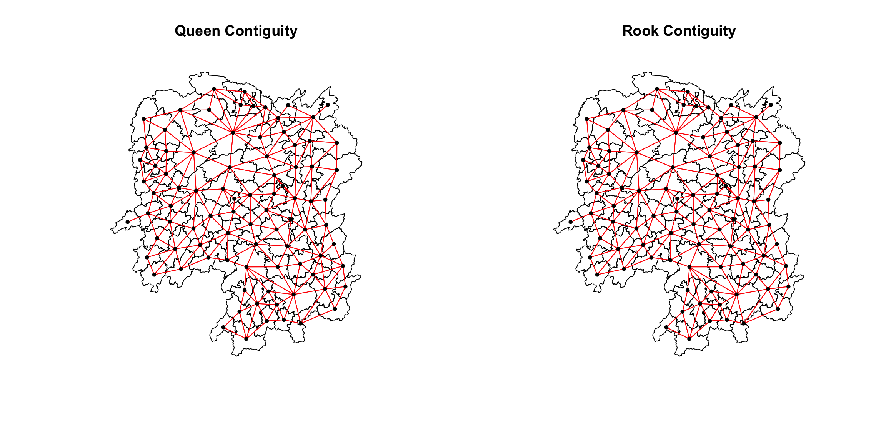

pacman::p_load(sf, spdep, tmap, tidyverse, knitr)4A: Spatial Weights and Applications
In this exercise, we will learn to compute spatial weights, visualize spatial distributions, and create spatially lagged variables using various functions from R packages such as sf,spdep, and tmap.
1 Exercise 4A Reference
R for Geospatial Data Science and Analytics - 8 Spatial Weights and Applications
2 Overview
In this exercise, we will learn to compute spatial weights, visualize spatial distributions, and create spatially lagged variables using various functions from R packages such as sf, spdep, and tmap.
3 Learning Outcome
- Import geospatial data using functions from the sf package.
- Import CSV data using functions from the readr package.
- Perform relational joins using functions from the dplyr package.
- Compute spatial weights with functions from the spdep package.
- Calculate spatially lagged variables using functions from the spdep package.
4 The Data
The following 2 datasets will be used in this exercise.
| Data Set | Description | Format |
|---|---|---|
| Hunan county boundary layer | Geospatial data set representing the county boundaries of Hunan | ESRI Shapefile |
| Hunan_2012.csv | Contains selected local development indicators for Hunan in 2012 | CSV |
5 Installing and Loading the R Packages
The following R packages will be used in this exercise:
| Package | Purpose | Use Case in Exercise |
|---|---|---|
| sf | Imports, manages, and processes vector-based geospatial data. | Handling vector geospatial data such as the Hunan county boundary layer in shapefile format. |
| spdep | Provides functions for spatial dependence analysis, including spatial weights and spatial autocorrelation. | Computing spatial weights and creating spatially lagged variables. |
| tmap | Creates static and interactive thematic maps using cartographic quality elements. | Visualizing regional development indicators and plotting maps showing spatial relationships and patterns. |
| tidyverse | A collection of packages for data science tasks such as data manipulation, visualization, and modeling. | Importing CSV files, wrangling data, and performing relational joins. |
| knitr | Enables dynamic report generation and integration of R code with documents. | Formatting output, creating tables, and generating reports for the exercise. |
To install and load these packages, use the following code:
6 Import Data and Preparation
In this section, we will perform 3 necessary steps to prepare the data for analysis.
6.1 Import Geospatial Shapefile
Firstly, we will use st_read() of sf package to import Hunan shapefile into R. The imported shapefile will be simple features Object of sf.
hunan <- st_read(dsn = "data/geospatial",
layer = "Hunan")Reading layer `Hunan' from data source
`/Users/walter/code/isss626/isss626-gaa/Hands-on_Ex/Hands-on_Ex04/data/geospatial'
using driver `ESRI Shapefile'
Simple feature collection with 88 features and 7 fields
Geometry type: POLYGON
Dimension: XY
Bounding box: xmin: 108.7831 ymin: 24.6342 xmax: 114.2544 ymax: 30.12812
Geodetic CRS: WGS 84dim(hunan)[1] 88 86.2 Import Aspatial csv File
Next, we will import Hunan_2012.csv into R by using read_csv() of readr package. The output is R dataframe class.
hunan2012 <- read_csv("data/aspatial/Hunan_2012.csv")dim(hunan2012)[1] 88 296.3 Perform Relational Join
Before we perform relational join, let’s observe the columns in each dataset and only select the columns that we need.
hunancolumns:
print(colnames(hunan))[1] "NAME_2" "ID_3" "NAME_3" "ENGTYPE_3" "Shape_Leng"
[6] "Shape_Area" "County" "geometry" hunan2012columns:
print(colnames(hunan2012)) [1] "County" "City" "avg_wage" "deposite" "FAI"
[6] "Gov_Rev" "Gov_Exp" "GDP" "GDPPC" "GIO"
[11] "Loan" "NIPCR" "Bed" "Emp" "EmpR"
[16] "EmpRT" "Pri_Stu" "Sec_Stu" "Household" "Household_R"
[21] "NOIP" "Pop_R" "RSCG" "Pop_T" "Agri"
[26] "Service" "Disp_Inc" "RORP" "ROREmp" After merging:
hunan_joined <- left_join(hunan,hunan2012)
print(colnames(hunan_joined)) [1] "NAME_2" "ID_3" "NAME_3" "ENGTYPE_3" "Shape_Leng"
[6] "Shape_Area" "County" "City" "avg_wage" "deposite"
[11] "FAI" "Gov_Rev" "Gov_Exp" "GDP" "GDPPC"
[16] "GIO" "Loan" "NIPCR" "Bed" "Emp"
[21] "EmpR" "EmpRT" "Pri_Stu" "Sec_Stu" "Household"
[26] "Household_R" "NOIP" "Pop_R" "RSCG" "Pop_T"
[31] "Agri" "Service" "Disp_Inc" "RORP" "ROREmp"
[36] "geometry" Then only select the columns that we need:
hunan <- hunan_joined %>%
select(1:4, 7, 15)
print(colnames(hunan))[1] "NAME_2" "ID_3" "NAME_3" "ENGTYPE_3" "County" "GDPPC"
[7] "geometry" In the code above, we use the left_join() function to merge the hunan SpatialPolygonsDataFrame with the hunan2012 dataframe. The join is based on the column named County, which is common to both datasets. This allows us to match rows by their corresponding counties.
After the join, the select() function is used to retain a subset of columns from the merged dataset. We can briefly observe the joined output below.
head(hunan)Simple feature collection with 6 features and 6 fields
Geometry type: POLYGON
Dimension: XY
Bounding box: xmin: 110.4922 ymin: 28.61762 xmax: 112.3013 ymax: 30.12812
Geodetic CRS: WGS 84
NAME_2 ID_3 NAME_3 ENGTYPE_3 County GDPPC
1 Changde 21098 Anxiang County Anxiang 23667
2 Changde 21100 Hanshou County Hanshou 20981
3 Changde 21101 Jinshi County City Jinshi 34592
4 Changde 21102 Li County Li 24473
5 Changde 21103 Linli County Linli 25554
6 Changde 21104 Shimen County Shimen 27137
geometry
1 POLYGON ((112.0625 29.75523...
2 POLYGON ((112.2288 29.11684...
3 POLYGON ((111.8927 29.6013,...
4 POLYGON ((111.3731 29.94649...
5 POLYGON ((111.6324 29.76288...
6 POLYGON ((110.8825 30.11675...7 Visualising Regional Development Indicator
To visualize the regional development indicator, we can prepare a base map and a choropleth map to show the distribution of GDPPC 2012 (GDP per capita) by using qtm() of tmap package.
basemap <- tm_shape(hunan) +
tm_polygons() +
tm_text("NAME_3", size=0.5)
gdppc <- qtm(hunan, "GDPPC")
tmap_arrange(basemap, gdppc, asp=1, ncol=2)
Note
Intepretation The choropleth map on the right visualizes the distribution of GDP per capita (GDPPC) for the year 2012 across the different counties in Hunan.
The counties are shaded in varying colors, ranging from light to dark, to represent different GDP per capita ranges. Darker shades indicate higher GDP per capita values, while lighter shades represent lower values. This visualization helps to identify regional economic disparities and highlights areas with higher or lower economic activity within Hunan province.
For example, we can observe that Changsha has the highest GDP per capital values in the Hunan region.
8 Computing Contiguity Spatial Weights
In this section, we will use poly2nb() of spdep package to compute contiguity weight matrices for the study area. This function builds a neighbours list based on regions with contiguous boundaries.
Note
Contiguity means that two spatial units share a common border of non-zero length.
Operationally, we can further distinguish between a rook and a queen criterion of contiguity, in analogy to the moves allowed for the such-named pieces on a chess board.
The rook criterion defines neighbors by the existence of a common edge between two spatial units. The queen criterion is somewhat more encompassing and defines neighbors as spatial units sharing a common edge or a common vertex.
Using poly2nb() we can use the queen flag to toggle between queen and rook criteria.
For more info, see Chapter 6 Contiguity-Based Spatial Weights | Hands-On Spatial Data Science with R
The number of neighbors according to the queen criterion will always be at least as large as for the rook criterion.
First, we will compute the Queen contiguity weight matrix.
wm_q <- poly2nb(hunan, queen=TRUE)
summary(wm_q)Neighbour list object:
Number of regions: 88
Number of nonzero links: 448
Percentage nonzero weights: 5.785124
Average number of links: 5.090909
Link number distribution:
1 2 3 4 5 6 7 8 9 11
2 2 12 16 24 14 11 4 2 1
2 least connected regions:
30 65 with 1 link
1 most connected region:
85 with 11 linkswm_r <- poly2nb(hunan, queen=FALSE)
summary(wm_r)Neighbour list object:
Number of regions: 88
Number of nonzero links: 440
Percentage nonzero weights: 5.681818
Average number of links: 5
Link number distribution:
1 2 3 4 5 6 7 8 9 10
2 2 12 20 21 14 11 3 2 1
2 least connected regions:
30 65 with 1 link
1 most connected region:
85 with 10 links
Note
Intepretation of Summary Reports
Both reports shows that there are 88 area units in Hunan.
As expected, the total number of links (neighbor relationships) is slightly higher for the queen criterion (448) than for the rook criterion (440).
Based on both criteria, the most connected region is Region 85 with 11 links (using Queen criteria) and 10 links (using Rook criteria)
Similarly, based on both criteria, the least connected region is Region 30 and 65 with 1 links (using Queen and Rook criteria)
For each polygon in the polygon object, wm_q and wm_r lists all neighboring polygons. For example, we can identify the most connected region.
cat("The most connected county is", hunan$County[85])The most connected county is TaoyuanTo reveal the county names of the neighboring polygons, we can do the following:
neighbour_counties <- wm_q[[85]]
print(neighbour_counties) [1] 1 2 3 5 6 32 56 57 69 75 78cat("Using Queen's method, the neighbours of ", hunan$County[85]," is", hunan$NAME_3[neighbour_counties])Using Queen's method, the neighbours of Taoyuan is Anxiang Hanshou Jinshi Linli Shimen Yuanling Anhua Nan Cili Sangzhi TaojiangWe can also retrieve the GDPPC of these counties:
hunan$GDPPC[neighbour_counties] [1] 23667 20981 34592 25554 27137 24194 14567 21311 18714 14624 19509The printed output above shows that the GDPPC of Taoyuan’s neighbouring counties.
To display the complete weight matrix, we can use str().
str(wm_q)9 Visualising Contiguity Weights
To create a connectivity graph, we need points that represent each polygon, and we’ll draw lines to connect neighboring points. Since we’re working with polygons, we first need to find their central points, called centroids. We’ll calculate these centroids using the sf package before creating the connectivity graph.
Getting Latitude and Longitude of Polygon Centroids
To make the connectivity graph, we must first obtain the points (centroids) for each polygon. This is more than just running st_centroid on our spatial object (us.bound). We need to store the coordinates in a separate data frame.
We’ll use a mapping function to achieve this. The mapping function applies a specific function to each element in a vector and returns a vector of the same length. In this case, our input vector will be the geometry column of us.bound, and the function will be st_centroid. We’ll use the map_dbl function from the purrr package to do this.
For longitude, we access the first coordinate value using [[1]], and for latitude, we access the second coordinate value using [[2]].
longitude <- map_dbl(hunan$geometry, ~st_centroid(.x)[[1]])
latitude <- map_dbl(hunan$geometry, ~st_centroid(.x)[[2]])Then, we use cbind() to combine longitude and lattude into the same object.
coords <- cbind(longitude, latitude)To verify that, the data is formatted correctly, we can observe the first few instances.
head(coords) longitude latitude
[1,] 112.1531 29.44362
[2,] 112.0372 28.86489
[3,] 111.8917 29.47107
[4,] 111.7031 29.74499
[5,] 111.6138 29.49258
[6,] 111.0341 29.79863To plot the continguity-based neighbours map, we can do the following:
par(mfrow=c(1,2))
plot(hunan$geometry,
main="Queen Contiguity")
plot(wm_q,
coords,
pch = 19,
cex = 0.6,
add = TRUE,
col= "red")
plot(hunan$geometry,
main="Rook Contiguity")
plot(wm_r,
coords,
pch = 19,
cex = 0.6,
add = TRUE,
col = "red")
::: callout-note As observed from the previous sections, we understand that more links will be formed with the Queen’s method. This is evident in the plot above.Some of these differences has been marked with blue boxes for better visualization. :::
10 Computing Distance-based Neighbours
In this section, we will create distance-based weight matrices using the dnearneigh() function from the spdep package.
This function identifies neighboring region points based on their Euclidean distance. We can specify a range for the distances using the bounds argument, which takes lower (d1=) and upper (d2=) limits.
If the coordinates are not projected (i.e., in latitude and longitude) and are specified in the x object or provided as a two-column matrix with longlat=TRUE, the function will calculate great circle distances in kilometers, assuming the WGS84 reference ellipsoid.
10.1 Determine the Cut-off Distance
Firstly, we need to determine the upper limit for distance band by using the steps below:
- Use the
knearneigh()function from the spdep package to create a matrix with the indices of the k nearest neighbors for each point.
# get k nearest neighbour where k = 1 (default)
knearneigh(coords, k=1)$nn
[,1]
[1,] 3
[2,] 78
[3,] 1
[4,] 5
[5,] 4
[6,] 69
[7,] 67
[8,] 46
[9,] 84
[10,] 70
[11,] 72
[12,] 63
[13,] 12
[14,] 17
[15,] 13
[16,] 22
[17,] 16
[18,] 20
[19,] 21
[20,] 82
[21,] 19
[22,] 16
[23,] 41
[24,] 54
[25,] 81
[26,] 81
[27,] 29
[28,] 49
[29,] 27
[30,] 33
[31,] 24
[32,] 50
[33,] 28
[34,] 45
[35,] 47
[36,] 34
[37,] 42
[38,] 44
[39,] 43
[40,] 39
[41,] 23
[42,] 37
[43,] 44
[44,] 43
[45,] 34
[46,] 47
[47,] 46
[48,] 51
[49,] 28
[50,] 52
[51,] 48
[52,] 54
[53,] 55
[54,] 52
[55,] 50
[56,] 36
[57,] 58
[58,] 57
[59,] 87
[60,] 13
[61,] 63
[62,] 61
[63,] 12
[64,] 57
[65,] 76
[66,] 68
[67,] 7
[68,] 66
[69,] 6
[70,] 10
[71,] 74
[72,] 11
[73,] 70
[74,] 71
[75,] 55
[76,] 65
[77,] 38
[78,] 2
[79,] 45
[80,] 34
[81,] 25
[82,] 21
[83,] 12
[84,] 9
[85,] 5
[86,] 74
[87,] 61
[88,] 87
$np
[1] 88
$k
[1] 1
$dimension
[1] 2
$x
longitude latitude
[1,] 112.1531 29.44362
[2,] 112.0372 28.86489
[3,] 111.8917 29.47107
[4,] 111.7031 29.74499
[5,] 111.6138 29.49258
[6,] 111.0341 29.79863
[7,] 113.7065 28.23215
[8,] 112.3460 28.13081
[9,] 112.8169 28.28918
[10,] 113.3534 26.57906
[11,] 113.8942 25.98122
[12,] 112.4006 25.63215
[13,] 112.5542 25.33880
[14,] 113.6636 25.54967
[15,] 112.9206 25.26722
[16,] 113.1883 26.21248
[17,] 113.4521 25.93480
[18,] 112.4209 26.36132
[19,] 113.0152 27.08120
[20,] 112.6350 26.75969
[21,] 112.7087 27.27930
[22,] 112.9095 26.42079
[23,] 111.9522 26.80117
[24,] 110.2606 27.89384
[25,] 110.0921 27.54115
[26,] 109.7985 26.91321
[27,] 109.5765 26.54507
[28,] 109.7211 27.78801
[29,] 109.7339 26.21157
[30,] 109.1537 27.22941
[31,] 110.6442 27.83407
[32,] 110.5916 28.57282
[33,] 109.5984 27.39828
[34,] 111.4783 27.67997
[35,] 112.1745 27.46256
[36,] 111.2315 27.86930
[37,] 110.3149 26.32113
[38,] 111.3248 26.48991
[39,] 110.5859 27.10164
[40,] 110.9593 27.34884
[41,] 111.8296 27.18765
[42,] 110.1926 26.70972
[43,] 110.7334 26.78494
[44,] 110.9123 26.54354
[45,] 111.4599 27.42910
[46,] 112.5268 27.92456
[47,] 112.3406 27.77407
[48,] 109.5602 28.66808
[49,] 109.5071 28.01142
[50,] 109.9954 28.60033
[51,] 109.4273 28.42749
[52,] 109.7587 28.31518
[53,] 109.5044 29.21940
[54,] 109.9899 28.16053
[55,] 109.9664 29.01206
[56,] 111.3785 28.28449
[57,] 112.4350 29.23817
[58,] 112.5558 28.97135
[59,] 111.7379 24.97087
[60,] 112.1831 25.31559
[61,] 111.9743 25.65101
[62,] 111.7009 25.91101
[63,] 112.2196 25.88615
[64,] 112.6472 29.48614
[65,] 113.5102 29.49285
[66,] 113.1172 28.79707
[67,] 113.7089 28.76024
[68,] 112.7963 28.71653
[69,] 110.9276 29.39439
[70,] 113.6420 26.80361
[71,] 113.4577 27.66123
[72,] 113.8404 26.37989
[73,] 113.4758 27.17064
[74,] 113.1428 27.62875
[75,] 110.3017 29.39053
[76,] 113.1957 29.25343
[77,] 111.7410 26.36035
[78,] 112.1831 28.49854
[79,] 111.3390 27.01465
[80,] 111.8208 27.75124
[81,] 110.0753 27.23539
[82,] 112.3965 27.08323
[83,] 112.7683 25.82828
[84,] 113.1679 28.30074
[85,] 111.4495 28.95406
[86,] 112.7956 27.68910
[87,] 111.5896 25.49530
[88,] 111.2393 25.19355
attr(,"class")
[1] "knn"
attr(,"call")
knearneigh(x = coords, k = 1)- Convert the
knnobject returned byknearneigh()into a neighbor list (nbclass) using theknn2nb()function. This list contains integer vectors representing the IDs of neighboring regions.
# convert knn matrix to neighbour list for k = 1
k1 <- knn2nb(knearneigh(coords))
k1Neighbour list object:
Number of regions: 88
Number of nonzero links: 88
Percentage nonzero weights: 1.136364
Average number of links: 1
25 disjoint connected subgraphs
Non-symmetric neighbours list- Calculate the length of neighbor relationship edges with the
nbdists()function from spdep. The distances will be in the units of the coordinates if projected, or in kilometers if not.
nbdists(k1, coords, longlat = TRUE)[[1]]
[1] 25.53398
[[2]]
[1] 43.03114
[[3]]
[1] 25.53398
[[4]]
[1] 29.2848
[[5]]
[1] 29.2848
[[6]]
[1] 45.98097
[[7]]
[1] 58.52704
[[8]]
[1] 28.95985
[[9]]
[1] 34.45062
[[10]]
[1] 37.99885
[[11]]
[1] 44.49442
[[12]]
[1] 33.48816
[[13]]
[1] 35.98123
[[14]]
[1] 47.65184
[[15]]
[1] 37.73556
[[16]]
[1] 36.16613
[[17]]
[1] 40.53569
[[18]]
[1] 49.02492
[[19]]
[1] 37.47543
[[20]]
[1] 42.97316
[[21]]
[1] 37.47543
[[22]]
[1] 36.16613
[[23]]
[1] 44.51898
[[24]]
[1] 39.7744
[[25]]
[1] 33.9218
[[26]]
[1] 45.03425
[[27]]
[1] 40.15056
[[28]]
[1] 32.50795
[[29]]
[1] 40.15056
[[30]]
[1] 47.83345
[[31]]
[1] 38.35439
[[32]]
[1] 58.39365
[[33]]
[1] 44.85211
[[34]]
[1] 27.85864
[[35]]
[1] 38.2151
[[36]]
[1] 32.12293
[[37]]
[1] 44.74688
[[38]]
[1] 41.53815
[[39]]
[1] 38.02669
[[40]]
[1] 46.029
[[41]]
[1] 44.51898
[[42]]
[1] 44.74688
[[43]]
[1] 32.1334
[[44]]
[1] 32.1334
[[45]]
[1] 27.85864
[[46]]
[1] 24.79082
[[47]]
[1] 24.79082
[[48]]
[1] 29.66852
[[49]]
[1] 32.50795
[[50]]
[1] 39.19375
[[51]]
[1] 29.66852
[[52]]
[1] 28.43598
[[53]]
[1] 50.50645
[[54]]
[1] 28.43598
[[55]]
[1] 45.721
[[56]]
[1] 48.22649
[[57]]
[1] 31.82332
[[58]]
[1] 31.82332
[[59]]
[1] 59.98421
[[60]]
[1] 37.44866
[[61]]
[1] 35.83248
[[62]]
[1] 39.77577
[[63]]
[1] 33.48816
[[64]]
[1] 34.34758
[[65]]
[1] 40.45791
[[66]]
[1] 32.58547
[[67]]
[1] 58.52704
[[68]]
[1] 32.58547
[[69]]
[1] 45.98097
[[70]]
[1] 37.99885
[[71]]
[1] 31.27538
[[72]]
[1] 44.49442
[[73]]
[1] 43.88878
[[74]]
[1] 31.27538
[[75]]
[1] 53.12656
[[76]]
[1] 40.45791
[[77]]
[1] 43.93382
[[78]]
[1] 43.03114
[[79]]
[1] 47.45858
[[80]]
[1] 34.68711
[[81]]
[1] 33.9218
[[82]]
[1] 37.80739
[[83]]
[1] 42.81869
[[84]]
[1] 34.45062
[[85]]
[1] 61.79116
[[86]]
[1] 34.90929
[[87]]
[1] 42.32891
[[88]]
[1] 48.59005
attr(,"class")
[1] "nbdist"
attr(,"call")
nbdists(nb = k1, coords = coords, longlat = TRUE)- Simplify the list structure of the returned object using the
unlist()function from the base R package.
k1dists <- unlist(nbdists(k1, coords, longlat = TRUE))
summary(k1dists) Min. 1st Qu. Median Mean 3rd Qu. Max.
24.79 32.57 38.01 39.07 44.52 61.79
Note
Using the summary report, we can observe that the largest first nearest neighbour distance is 61.79 km, so using this as the upper threshold gives certainty that all units will have at least one neighbour.
10.2 Plotting Fixed Distance Weight Matrix
# get max dist from k1dists rounded up to integer
max_dist <- as.integer(ceiling(max(k1dists)))
wm_d62 <- dnearneigh(x=coords, d1=0, d2=max_dist, longlat = TRUE)
wm_d62Neighbour list object:
Number of regions: 88
Number of nonzero links: 324
Percentage nonzero weights: 4.183884
Average number of links: 3.681818
Note
Output Intepretation
- The weight matrix shows 88 regions (counties).
- There are a total of 324 connections between all regions.
- The formula for Percentage nonzero weights:
\(\text{Percentage nonzero weights} = \left( \frac{\text{Number of nonzero links}}{\text{Total possible links}} \right) \times 100\)
and the total possible links can be computed as \(n \times n=88 \times 88 = 7744\)
Plugging in the numbers, we will get \(\text{Percentage nonzero weights} = \left( \frac{324}{7744} \right) \times 100 \approx 4.18\%\)
- The formula for average number of links: \(\text{Average number of links} = \frac{\text{Total number of nonzero links}}{\text{Number of regions}} = \frac{324}{88} \approx 3.68\)
We can also use str() to display the content of wm_d62 weight matrix.
str(wm_d62)Another way to display the structure of the weight matrix is to combine table() and card() of spdep.
table(hunan$County,
card(wm_d62))
1 2 3 4 5 6
Anhua 1 0 0 0 0 0
Anren 0 0 0 1 0 0
Anxiang 0 0 0 0 1 0
Baojing 0 0 0 0 1 0
Chaling 0 0 1 0 0 0
Changning 0 0 1 0 0 0
Changsha 0 0 0 1 0 0
Chengbu 0 1 0 0 0 0
Chenxi 0 0 0 1 0 0
Cili 0 1 0 0 0 0
Dao 0 0 0 1 0 0
Dongan 0 0 1 0 0 0
Dongkou 0 0 0 1 0 0
Fenghuang 0 0 0 1 0 0
Guidong 0 0 1 0 0 0
Guiyang 0 0 0 1 0 0
Guzhang 0 0 0 0 0 1
Hanshou 0 0 0 1 0 0
Hengdong 0 0 0 0 1 0
Hengnan 0 0 0 0 1 0
Hengshan 0 0 0 0 0 1
Hengyang 0 0 0 0 0 1
Hongjiang 0 0 0 0 1 0
Huarong 0 0 0 1 0 0
Huayuan 0 0 0 1 0 0
Huitong 0 0 0 1 0 0
Jiahe 0 0 0 0 1 0
Jianghua 0 0 1 0 0 0
Jiangyong 0 1 0 0 0 0
Jingzhou 0 1 0 0 0 0
Jinshi 0 0 0 1 0 0
Jishou 0 0 0 0 0 1
Lanshan 0 0 0 1 0 0
Leiyang 0 0 0 1 0 0
Lengshuijiang 0 0 1 0 0 0
Li 0 0 1 0 0 0
Lianyuan 0 0 0 0 1 0
Liling 0 1 0 0 0 0
Linli 0 0 0 1 0 0
Linwu 0 0 0 1 0 0
Linxiang 1 0 0 0 0 0
Liuyang 0 1 0 0 0 0
Longhui 0 0 1 0 0 0
Longshan 0 1 0 0 0 0
Luxi 0 0 0 0 1 0
Mayang 0 0 0 0 0 1
Miluo 0 0 0 0 1 0
Nan 0 0 0 0 1 0
Ningxiang 0 0 0 1 0 0
Ningyuan 0 0 0 0 1 0
Pingjiang 0 1 0 0 0 0
Qidong 0 0 1 0 0 0
Qiyang 0 0 1 0 0 0
Rucheng 0 1 0 0 0 0
Sangzhi 0 1 0 0 0 0
Shaodong 0 0 0 0 1 0
Shaoshan 0 0 0 0 1 0
Shaoyang 0 0 0 1 0 0
Shimen 1 0 0 0 0 0
Shuangfeng 0 0 0 0 0 1
Shuangpai 0 0 0 1 0 0
Suining 0 0 0 0 1 0
Taojiang 0 1 0 0 0 0
Taoyuan 0 1 0 0 0 0
Tongdao 0 1 0 0 0 0
Wangcheng 0 0 0 1 0 0
Wugang 0 0 1 0 0 0
Xiangtan 0 0 0 1 0 0
Xiangxiang 0 0 0 0 1 0
Xiangyin 0 0 0 1 0 0
Xinhua 0 0 0 0 1 0
Xinhuang 1 0 0 0 0 0
Xinning 0 1 0 0 0 0
Xinshao 0 0 0 0 0 1
Xintian 0 0 0 0 1 0
Xupu 0 1 0 0 0 0
Yanling 0 0 1 0 0 0
Yizhang 1 0 0 0 0 0
Yongshun 0 0 0 1 0 0
Yongxing 0 0 0 1 0 0
You 0 0 0 1 0 0
Yuanjiang 0 0 0 0 1 0
Yuanling 1 0 0 0 0 0
Yueyang 0 0 1 0 0 0
Zhijiang 0 0 0 0 1 0
Zhongfang 0 0 0 1 0 0
Zhuzhou 0 0 0 0 1 0
Zixing 0 0 1 0 0 0n.comp.nb() finds the number of disjoint connected subgraphs in the graph depicted by nb.obj see Graph Components function - RDocumentation
n_comp <- n.comp.nb(wm_d62)
n_comp$nc[1] 1Above shows the number of connected components in the spatial neighbour network. The output of 1 indicates that is 1 connected component.
table(n_comp$comp.id)
1
88 And this connected component comprises of 88 regions, indicating all regions are part of a single interconnected group.
10.3 Plotting Fixed Distance Weight Matrix
We can plot the distance weight matrix as shown below:
par(mfrow=c(1,2))
plot(hunan$geometry, border="lightgrey", main="1st Nearest Neighbours")
plot(k1, coords, add=TRUE, col="red", length=0.08)
plot(hunan$geometry, border="lightgrey", main="Distance Link")
plot(wm_d62, coords, add=TRUE)
plot(k1, coords, add=TRUE, col="red", length=0.08)On the left plot, the red lines show the links of 1st nearest neighbours.
On the right plot, the red lines show the links of 1st nearest neighbours and the black lines show the links of neighbours within the cut-off distance of 62km.
10.4 Computing Adaptive Distance Weight Matrix
A fixed distance weight matrix typically shows that densely populated areas (like urban regions) have more neighbors, while sparsely populated areas (such as rural counties) have fewer neighbors. When there are many neighbors, the relationships between them are spread across a larger number of connections, creating a smoother effect.
To control the number of neighbours, we can set the k value.
knn6 <- knn2nb(knearneigh(coords, k=6))
knn6Neighbour list object:
Number of regions: 88
Number of nonzero links: 528
Percentage nonzero weights: 6.818182
Average number of links: 6
Non-symmetric neighbours listEach county has exactly 6 neighbours.
str(knn6)10.4.1 Computing Adaptive Distance Weight Matrix
plot(hunan$geometry, border="lightgrey", main="6 Nearest Neighbours")
plot(knn6, coords, add = TRUE, col = "red")11 Weights based on Inversed Distance Weight (IDW) Method
In this section, you will learn how to derive a spatial weight matrix based on Inversed Distance Weights method.
Note
In order to conform to Tobler’s first law of geography, a distance decay effect must be respected.
The inverse distance weight method assigns weights to neighbors based on their distance: closer neighbors get higher weights, and further ones get lower weights.
It works by taking the distance between two locations and calculating the weight as 1 divided by that distance.
For more info, see Spatial Weights as Distance Functions.
dist <- nbdists(wm_q,
coords,
longlat = TRUE)
# apply 1/x on every element on list objects
ids <- lapply(dist, function(x) 1/(x))12 Row-standardised Weights Matrix
Next, we need to assign weights to each neighboring polygon. In this case, we’ll use equal weights (style=“W”), where each neighboring polygon gets a weight of 1/(number of neighbors). This means we take the value for each neighbor and divide it by the total number of neighbors, then sum these weighted values to calculate a summary measure, such as weighted income.
While this equal weighting approach is straightforward and easy to understand, it has a limitation: polygons on the edges of the study area have fewer neighbors, which can lead to over- or underestimation of the actual spatial relationships (spatial autocorrelation) in the data.
Tip
For simplicity, we use the style=“W” option in this example, but keep in mind that other, potentially more accurate methods are available, such as style=“B”.
# note we are using queen's method here
rswm_q <- nb2listw(wm_q, style="W", zero.policy = TRUE)
rswm_qCharacteristics of weights list object:
Neighbour list object:
Number of regions: 88
Number of nonzero links: 448
Percentage nonzero weights: 5.785124
Average number of links: 5.090909
Weights style: W
Weights constants summary:
n nn S0 S1 S2
W 88 7744 88 37.86334 365.9147
Tip
The zero.policy=TRUE option allows for lists of non-neighbors. This should be used with caution since the user may not be aware of missing neighbors in their dataset however, a zero.policy of FALSE would return an error.
To see the weight of the 85th polygon’s 11 neighbors type:
rswm_q$weights[85][[1]]
[1] 0.09090909 0.09090909 0.09090909 0.09090909 0.09090909 0.09090909
[7] 0.09090909 0.09090909 0.09090909 0.09090909 0.09090909Each neighbor is assigned a 0.0909 of the total weight. This means that when R computes the average neighboring income values, each neighbor’s income will be multiplied by 0.0909 before being tallied.
Using the same method, we can also derive a row standardised distance weight matrix by using the code block below.
rswm_ids <- nb2listw(wm_q, glist=ids, style="B", zero.policy=TRUE)
rswm_idsCharacteristics of weights list object:
Neighbour list object:
Number of regions: 88
Number of nonzero links: 448
Percentage nonzero weights: 5.785124
Average number of links: 5.090909
Weights style: B
Weights constants summary:
n nn S0 S1 S2
B 88 7744 8.786867 0.3776535 3.8137rswm_ids$weights[85][[1]]
[1] 0.011451133 0.017193502 0.013957649 0.016183544 0.009810297 0.010656545
[7] 0.013416965 0.009903702 0.014199260 0.008217581 0.011407794Notice that the output has different weight of each neighbour. We can use summary report to observe the differences.
summary(unlist(rswm_q$weights)) Min. 1st Qu. Median Mean 3rd Qu. Max.
0.09091 0.14286 0.20000 0.19643 0.20000 1.00000 cat("\n-----------------------------\n")
-----------------------------summary(unlist(rswm_ids$weights)) Min. 1st Qu. Median Mean 3rd Qu. Max.
0.008218 0.015088 0.018739 0.019614 0.022823 0.040338 13 Application of Spatial Weight Matrix
In this section, we will create 4 different spatial lagged variables:
- spatial lag with row-standardized weights,
- spatial lag as a sum of neighbouring values,
- spatial window average, and
- spatial window sum.
13.1 Spatial Lag with Row-standardized Weights
We’ll compute the average neighbor GDPPC value for each polygon. These values are often referred to as spatially lagged values.
GDPPC.lag <- lag.listw(rswm_q, hunan$GDPPC)
GDPPC.lag [1] 24847.20 22724.80 24143.25 27737.50 27270.25 21248.80 43747.00 33582.71
[9] 45651.17 32027.62 32671.00 20810.00 25711.50 30672.33 33457.75 31689.20
[17] 20269.00 23901.60 25126.17 21903.43 22718.60 25918.80 20307.00 20023.80
[25] 16576.80 18667.00 14394.67 19848.80 15516.33 20518.00 17572.00 15200.12
[33] 18413.80 14419.33 24094.50 22019.83 12923.50 14756.00 13869.80 12296.67
[41] 15775.17 14382.86 11566.33 13199.50 23412.00 39541.00 36186.60 16559.60
[49] 20772.50 19471.20 19827.33 15466.80 12925.67 18577.17 14943.00 24913.00
[57] 25093.00 24428.80 17003.00 21143.75 20435.00 17131.33 24569.75 23835.50
[65] 26360.00 47383.40 55157.75 37058.00 21546.67 23348.67 42323.67 28938.60
[73] 25880.80 47345.67 18711.33 29087.29 20748.29 35933.71 15439.71 29787.50
[81] 18145.00 21617.00 29203.89 41363.67 22259.09 44939.56 16902.00 16930.00In the previous section, we retrieved the GDPPC of these 11 counties by using the code block below.
nb1 <- wm_q[[85]]
nb1 <- hunan$GDPPC[nb1]
nb1 [1] 23667 20981 34592 25554 27137 24194 14567 21311 18714 14624 19509Question: Can you see the meaning of Spatial lag with row-standardized weights now? Spatial lag represents the average or sum of a variable (GDPPC) for a region’s neighbors. In this context, the spatial lag for a region gives an idea of how that region’s GDPPC relates to the GDPPC of its neighboring regions.
With row-standardized weights (style=“W”), each neighboring region is assigned an equal weight of 1/(number of neighbors). This ensures that the weights for all neighbors of a region sum to 1.
We can append the spatially lag GDPPC values onto hunan sf data frame by using the code block below:
lag.list <- list(hunan$NAME_3, lag.listw(rswm_q, hunan$GDPPC))
lag.res <- as.data.frame(lag.list)
colnames(lag.res) <- c("NAME_3", "lag GDPPC")
hunan <- left_join(hunan,lag.res)The following table shows the average neighboring income values (stored in the Inc.lag object) for each county.
head(hunan)Simple feature collection with 6 features and 7 fields
Geometry type: POLYGON
Dimension: XY
Bounding box: xmin: 110.4922 ymin: 28.61762 xmax: 112.3013 ymax: 30.12812
Geodetic CRS: WGS 84
NAME_2 ID_3 NAME_3 ENGTYPE_3 County GDPPC lag GDPPC
1 Changde 21098 Anxiang County Anxiang 23667 24847.20
2 Changde 21100 Hanshou County Hanshou 20981 22724.80
3 Changde 21101 Jinshi County City Jinshi 34592 24143.25
4 Changde 21102 Li County Li 24473 27737.50
5 Changde 21103 Linli County Linli 25554 27270.25
6 Changde 21104 Shimen County Shimen 27137 21248.80
geometry
1 POLYGON ((112.0625 29.75523...
2 POLYGON ((112.2288 29.11684...
3 POLYGON ((111.8927 29.6013,...
4 POLYGON ((111.3731 29.94649...
5 POLYGON ((111.6324 29.76288...
6 POLYGON ((110.8825 30.11675...Next, we will plot both the GDPPC and spatial lag GDPPC for comparison using the code block below.
gdppc <- qtm(hunan, "GDPPC")
lag_gdppc <- qtm(hunan, "lag GDPPC")
tmap_arrange(gdppc, lag_gdppc, asp=1, ncol=2)
Recall that in our previous observation, we made the statement that Changsha has the highest GDP per capital values in the Hunan region.
Using spatial lag values, we can observe that Yueyang has the highest spatial lag GDP per capita, meaning its neighbors (on average) have the highest GDP per capita.
13.2 Spatial Lag as a Sum of Neighboring Values
To calculate spatial lag as the sum of neighboring values, we can assign binary weights (where each neighbor gets a weight of 1).
To do this, we go back to our list of neighbors and use a function to assign these binary weights. We then use the glist argument in the nb2listw function to set these weights explicitly.
We start by using lapply to assign a weight of 1 to each neighbor. lapply is a function we have been using to work with the neighbors list in previous notebooks; it applies a specified function to each value in the neighbors list.
# Create binary weights for each neighbor
# uses lapply to go through each element of the neighbors list (wm_q).
# The function '0 * x + 1' assigns a weight of 1 to each neighbor.
b_weights <- lapply(wm_q, function(x) 0*x + 1)
# Convert the neighbor list to a spatial weights list object
# 'nb2listw' converts the neighbors list (wm_q) into a weights list.
# 'glist = b_weights' explicitly sets the weights to the binary weights created above.
# 'style = "B"' specifies binary weighting style, where each neighbor has equal weight (1).
b_weights2 <- nb2listw(wm_q,
glist = b_weights,
style = "B")
b_weights2Characteristics of weights list object:
Neighbour list object:
Number of regions: 88
Number of nonzero links: 448
Percentage nonzero weights: 5.785124
Average number of links: 5.090909
Weights style: B
Weights constants summary:
n nn S0 S1 S2
B 88 7744 448 896 10224With the proper weights assigned, we can use lag.listw to compute a lag variable from our weight and GDPPC.
lag_sum <- list(hunan$NAME_3, lag.listw(b_weights2, hunan$GDPPC))
lag.res <- as.data.frame(lag_sum)
colnames(lag.res) <- c("NAME_3", "lag_sum GDPPC")
lag_sum[[1]]
[1] "Anxiang" "Hanshou" "Jinshi" "Li"
[5] "Linli" "Shimen" "Liuyang" "Ningxiang"
[9] "Wangcheng" "Anren" "Guidong" "Jiahe"
[13] "Linwu" "Rucheng" "Yizhang" "Yongxing"
[17] "Zixing" "Changning" "Hengdong" "Hengnan"
[21] "Hengshan" "Leiyang" "Qidong" "Chenxi"
[25] "Zhongfang" "Huitong" "Jingzhou" "Mayang"
[29] "Tongdao" "Xinhuang" "Xupu" "Yuanling"
[33] "Zhijiang" "Lengshuijiang" "Shuangfeng" "Xinhua"
[37] "Chengbu" "Dongan" "Dongkou" "Longhui"
[41] "Shaodong" "Suining" "Wugang" "Xinning"
[45] "Xinshao" "Shaoshan" "Xiangxiang" "Baojing"
[49] "Fenghuang" "Guzhang" "Huayuan" "Jishou"
[53] "Longshan" "Luxi" "Yongshun" "Anhua"
[57] "Nan" "Yuanjiang" "Jianghua" "Lanshan"
[61] "Ningyuan" "Shuangpai" "Xintian" "Huarong"
[65] "Linxiang" "Miluo" "Pingjiang" "Xiangyin"
[69] "Cili" "Chaling" "Liling" "Yanling"
[73] "You" "Zhuzhou" "Sangzhi" "Yueyang"
[77] "Qiyang" "Taojiang" "Shaoyang" "Lianyuan"
[81] "Hongjiang" "Hengyang" "Guiyang" "Changsha"
[85] "Taoyuan" "Xiangtan" "Dao" "Jiangyong"
[[2]]
[1] 124236 113624 96573 110950 109081 106244 174988 235079 273907 256221
[11] 98013 104050 102846 92017 133831 158446 141883 119508 150757 153324
[21] 113593 129594 142149 100119 82884 74668 43184 99244 46549 20518
[31] 140576 121601 92069 43258 144567 132119 51694 59024 69349 73780
[41] 94651 100680 69398 52798 140472 118623 180933 82798 83090 97356
[51] 59482 77334 38777 111463 74715 174391 150558 122144 68012 84575
[61] 143045 51394 98279 47671 26360 236917 220631 185290 64640 70046
[71] 126971 144693 129404 284074 112268 203611 145238 251536 108078 238300
[81] 108870 108085 262835 248182 244850 404456 67608 33860Question: Can you understand the meaning of Spatial lag as a sum of neighboring values now?
By assigning binary weights (where each neighbor is given a weight of 1), we calculate the spatial lag by summing the values of this variable for all neighbors. This means that the spatial lag reflects the combined influence or total value contributed by the neighboring regions, providing an idea of the overall regional context or neighborhood effect around a specific area.
Next, we will append the lag_sum GDPPC field into hunan sf data frame by using the code block below.
hunan <- left_join(hunan, lag.res)Now, we can plot the GDPPC, Spatial Lag GDPPC, Spatial Lag Sum GDPPC for comparison using the code block below.
gdppc <- qtm(hunan, "GDPPC")
lag_gdppc <- qtm(hunan, "lag GDPPC")
lag_sum_gdppc <- qtm(hunan, "lag_sum GDPPC")
tmap_arrange(gdppc, lag_gdppc, lag_sum_gdppc, asp=1, ncol=3)13.3 Spatial Window Average
The spatial window average uses row-standardized weights and includes the diagonal element. To do this in R, we need to go back to the neighbors structure and add the diagonal element before assigning weights.
To add the diagonal element to the neighbour list, we just need to use include.self() from spdep.
wm_qs <- include.self(wm_q)Let us take a good look at the neighbour list of area 85 by using the code block below.
wm_qs[[85]] [1] 1 2 3 5 6 32 56 57 69 75 78 85Notice that now region 85 has 12 neighbours instead of 11.
Now we obtain weights with nb2listw().
wm_qs <- nb2listw(wm_qs)
wm_qsCharacteristics of weights list object:
Neighbour list object:
Number of regions: 88
Number of nonzero links: 536
Percentage nonzero weights: 6.921488
Average number of links: 6.090909
Weights style: W
Weights constants summary:
n nn S0 S1 S2
W 88 7744 88 30.90265 357.5308Again, we use nb2listw() and glist() to explicitly assign weight values.
Lastly, we just need to create the lag variable from our weight structure and GDPPC variable.
lag_w_avg_gpdpc <- lag.listw(wm_qs,
hunan$GDPPC)
lag_w_avg_gpdpc [1] 24650.50 22434.17 26233.00 27084.60 26927.00 22230.17 47621.20 37160.12
[9] 49224.71 29886.89 26627.50 22690.17 25366.40 25825.75 30329.00 32682.83
[17] 25948.62 23987.67 25463.14 21904.38 23127.50 25949.83 20018.75 19524.17
[25] 18955.00 17800.40 15883.00 18831.33 14832.50 17965.00 17159.89 16199.44
[33] 18764.50 26878.75 23188.86 20788.14 12365.20 15985.00 13764.83 11907.43
[41] 17128.14 14593.62 11644.29 12706.00 21712.29 43548.25 35049.00 16226.83
[49] 19294.40 18156.00 19954.75 18145.17 12132.75 18419.29 14050.83 23619.75
[57] 24552.71 24733.67 16762.60 20932.60 19467.75 18334.00 22541.00 26028.00
[65] 29128.50 46569.00 47576.60 36545.50 20838.50 22531.00 42115.50 27619.00
[73] 27611.33 44523.29 18127.43 28746.38 20734.50 33880.62 14716.38 28516.22
[81] 18086.14 21244.50 29568.80 48119.71 22310.75 43151.60 17133.40 17009.33Next, we will convert the lag variable listw object into a data.frame by using as.data.frame().
lag.list.wm_qs <- list(hunan$NAME_3, lag.listw(wm_qs, hunan$GDPPC))
lag_wm_qs.res <- as.data.frame(lag.list.wm_qs)
colnames(lag_wm_qs.res) <- c("NAME_3", "lag_window_avg GDPPC")
Note
The third command line on the code chunk above renames the field names of lag_wm_q1.res object into NAME_3 and lag_window_avg GDPPC respectively.
Next, the code chunk below will be used to append lag_window_avg GDPPC values onto hunan sf data.frame by using left_join() of dplyr package.
hunan <- left_join(hunan, lag_wm_qs.res)To compare the values of lag GDPPC and Spatial window average, kable() of Knitr package is used to prepare a table using the code chunk below.
hunan %>%
select("County",
"lag GDPPC",
"lag_window_avg GDPPC") %>%
kable()| County | lag GDPPC | lag_window_avg GDPPC | geometry |
|---|---|---|---|
| Anxiang | 24847.20 | 24650.50 | POLYGON ((112.0625 29.75523… |
| Hanshou | 22724.80 | 22434.17 | POLYGON ((112.2288 29.11684… |
| Jinshi | 24143.25 | 26233.00 | POLYGON ((111.8927 29.6013,… |
| Li | 27737.50 | 27084.60 | POLYGON ((111.3731 29.94649… |
| Linli | 27270.25 | 26927.00 | POLYGON ((111.6324 29.76288… |
| Shimen | 21248.80 | 22230.17 | POLYGON ((110.8825 30.11675… |
| Liuyang | 43747.00 | 47621.20 | POLYGON ((113.9905 28.5682,… |
| Ningxiang | 33582.71 | 37160.12 | POLYGON ((112.7181 28.38299… |
| Wangcheng | 45651.17 | 49224.71 | POLYGON ((112.7914 28.52688… |
| Anren | 32027.62 | 29886.89 | POLYGON ((113.1757 26.82734… |
| Guidong | 32671.00 | 26627.50 | POLYGON ((114.1799 26.20117… |
| Jiahe | 20810.00 | 22690.17 | POLYGON ((112.4425 25.74358… |
| Linwu | 25711.50 | 25366.40 | POLYGON ((112.5914 25.55143… |
| Rucheng | 30672.33 | 25825.75 | POLYGON ((113.6759 25.87578… |
| Yizhang | 33457.75 | 30329.00 | POLYGON ((113.2621 25.68394… |
| Yongxing | 31689.20 | 32682.83 | POLYGON ((113.3169 26.41843… |
| Zixing | 20269.00 | 25948.62 | POLYGON ((113.7311 26.16259… |
| Changning | 23901.60 | 23987.67 | POLYGON ((112.6144 26.60198… |
| Hengdong | 25126.17 | 25463.14 | POLYGON ((113.1056 27.21007… |
| Hengnan | 21903.43 | 21904.38 | POLYGON ((112.7599 26.98149… |
| Hengshan | 22718.60 | 23127.50 | POLYGON ((112.607 27.4689, … |
| Leiyang | 25918.80 | 25949.83 | POLYGON ((112.9996 26.69276… |
| Qidong | 20307.00 | 20018.75 | POLYGON ((111.7818 27.0383,… |
| Chenxi | 20023.80 | 19524.17 | POLYGON ((110.2624 28.21778… |
| Zhongfang | 16576.80 | 18955.00 | POLYGON ((109.9431 27.72858… |
| Huitong | 18667.00 | 17800.40 | POLYGON ((109.9419 27.10512… |
| Jingzhou | 14394.67 | 15883.00 | POLYGON ((109.8186 26.75842… |
| Mayang | 19848.80 | 18831.33 | POLYGON ((109.795 27.98008,… |
| Tongdao | 15516.33 | 14832.50 | POLYGON ((109.9294 26.46561… |
| Xinhuang | 20518.00 | 17965.00 | POLYGON ((109.227 27.43733,… |
| Xupu | 17572.00 | 17159.89 | POLYGON ((110.7189 28.30485… |
| Yuanling | 15200.12 | 16199.44 | POLYGON ((110.9652 28.99895… |
| Zhijiang | 18413.80 | 18764.50 | POLYGON ((109.8818 27.60661… |
| Lengshuijiang | 14419.33 | 26878.75 | POLYGON ((111.5307 27.81472… |
| Shuangfeng | 24094.50 | 23188.86 | POLYGON ((112.263 27.70421,… |
| Xinhua | 22019.83 | 20788.14 | POLYGON ((111.3345 28.19642… |
| Chengbu | 12923.50 | 12365.20 | POLYGON ((110.4455 26.69317… |
| Dongan | 14756.00 | 15985.00 | POLYGON ((111.4531 26.86812… |
| Dongkou | 13869.80 | 13764.83 | POLYGON ((110.6622 27.37305… |
| Longhui | 12296.67 | 11907.43 | POLYGON ((110.985 27.65983,… |
| Shaodong | 15775.17 | 17128.14 | POLYGON ((111.9054 27.40254… |
| Suining | 14382.86 | 14593.62 | POLYGON ((110.389 27.10006,… |
| Wugang | 11566.33 | 11644.29 | POLYGON ((110.9878 27.03345… |
| Xinning | 13199.50 | 12706.00 | POLYGON ((111.0736 26.84627… |
| Xinshao | 23412.00 | 21712.29 | POLYGON ((111.6013 27.58275… |
| Shaoshan | 39541.00 | 43548.25 | POLYGON ((112.5391 27.97742… |
| Xiangxiang | 36186.60 | 35049.00 | POLYGON ((112.4549 28.05783… |
| Baojing | 16559.60 | 16226.83 | POLYGON ((109.7015 28.82844… |
| Fenghuang | 20772.50 | 19294.40 | POLYGON ((109.5239 28.19206… |
| Guzhang | 19471.20 | 18156.00 | POLYGON ((109.8968 28.74034… |
| Huayuan | 19827.33 | 19954.75 | POLYGON ((109.5647 28.61712… |
| Jishou | 15466.80 | 18145.17 | POLYGON ((109.8375 28.4696,… |
| Longshan | 12925.67 | 12132.75 | POLYGON ((109.6337 29.62521… |
| Luxi | 18577.17 | 18419.29 | POLYGON ((110.1067 28.41835… |
| Yongshun | 14943.00 | 14050.83 | POLYGON ((110.0003 29.29499… |
| Anhua | 24913.00 | 23619.75 | POLYGON ((111.6034 28.63716… |
| Nan | 25093.00 | 24552.71 | POLYGON ((112.3232 29.46074… |
| Yuanjiang | 24428.80 | 24733.67 | POLYGON ((112.4391 29.1791,… |
| Jianghua | 17003.00 | 16762.60 | POLYGON ((111.6461 25.29661… |
| Lanshan | 21143.75 | 20932.60 | POLYGON ((112.2286 25.61123… |
| Ningyuan | 20435.00 | 19467.75 | POLYGON ((112.0715 26.09892… |
| Shuangpai | 17131.33 | 18334.00 | POLYGON ((111.8864 26.11957… |
| Xintian | 24569.75 | 22541.00 | POLYGON ((112.2578 26.0796,… |
| Huarong | 23835.50 | 26028.00 | POLYGON ((112.9242 29.69134… |
| Linxiang | 26360.00 | 29128.50 | POLYGON ((113.5502 29.67418… |
| Miluo | 47383.40 | 46569.00 | POLYGON ((112.9902 29.02139… |
| Pingjiang | 55157.75 | 47576.60 | POLYGON ((113.8436 29.06152… |
| Xiangyin | 37058.00 | 36545.50 | POLYGON ((112.9173 28.98264… |
| Cili | 21546.67 | 20838.50 | POLYGON ((110.8822 29.69017… |
| Chaling | 23348.67 | 22531.00 | POLYGON ((113.7666 27.10573… |
| Liling | 42323.67 | 42115.50 | POLYGON ((113.5673 27.94346… |
| Yanling | 28938.60 | 27619.00 | POLYGON ((113.9292 26.6154,… |
| You | 25880.80 | 27611.33 | POLYGON ((113.5879 27.41324… |
| Zhuzhou | 47345.67 | 44523.29 | POLYGON ((113.2493 28.02411… |
| Sangzhi | 18711.33 | 18127.43 | POLYGON ((110.556 29.40543,… |
| Yueyang | 29087.29 | 28746.38 | POLYGON ((113.343 29.61064,… |
| Qiyang | 20748.29 | 20734.50 | POLYGON ((111.5563 26.81318… |
| Taojiang | 35933.71 | 33880.62 | POLYGON ((112.0508 28.67265… |
| Shaoyang | 15439.71 | 14716.38 | POLYGON ((111.5013 27.30207… |
| Lianyuan | 29787.50 | 28516.22 | POLYGON ((111.6789 28.02946… |
| Hongjiang | 18145.00 | 18086.14 | POLYGON ((110.1441 27.47513… |
| Hengyang | 21617.00 | 21244.50 | POLYGON ((112.7144 26.98613… |
| Guiyang | 29203.89 | 29568.80 | POLYGON ((113.0811 26.04963… |
| Changsha | 41363.67 | 48119.71 | POLYGON ((112.9421 28.03722… |
| Taoyuan | 22259.09 | 22310.75 | POLYGON ((112.0612 29.32855… |
| Xiangtan | 44939.56 | 43151.60 | POLYGON ((113.0426 27.8942,… |
| Dao | 16902.00 | 17133.40 | POLYGON ((111.498 25.81679,… |
| Jiangyong | 16930.00 | 17009.33 | POLYGON ((111.3659 25.39472… |
Lastly, qtm() of tmap package is used to plot the lag_gdppc and w_ave_gdppc maps next to each other for quick comparison.
w_avg_gdppc <- qtm(hunan, "lag_window_avg GDPPC")
tmap_arrange(lag_gdppc, w_avg_gdppc, asp=1, ncol=2)
Tip
For more effective comparison, it is advisable to use the core tmap mapping functions.
13.4 Spatial Window Sum
The spatial window sum is the counter part of the window average, but without using row-standardized weights.
To add the diagonal element to the neighbour list, we just need to use include.self() from spdep.
wm_qs <- include.self(wm_q)
wm_qsNeighbour list object:
Number of regions: 88
Number of nonzero links: 536
Percentage nonzero weights: 6.921488
Average number of links: 6.090909 Next, we will assign binary weights to the neighbour structure that includes the diagonal element.
b_weights <- lapply(wm_qs, function(x) 0*x + 1)
b_weights[1][[1]]
[1] 1 1 1 1 1 1Notice that now region 85 has 12 neighbours instead of 11.
Again, we use nb2listw() and glist() to explicitly assign weight values.
b_weights2 <- nb2listw(wm_qs,
glist = b_weights,
style = "B")
b_weights2Characteristics of weights list object:
Neighbour list object:
Number of regions: 88
Number of nonzero links: 536
Percentage nonzero weights: 6.921488
Average number of links: 6.090909
Weights style: B
Weights constants summary:
n nn S0 S1 S2
B 88 7744 536 1072 14160With our new weight structure, we can compute the lag variable with lag.listw().
w_sum_gdppc <- list(hunan$NAME_3, lag.listw(b_weights2, hunan$GDPPC))
w_sum_gdppc[[1]]
[1] "Anxiang" "Hanshou" "Jinshi" "Li"
[5] "Linli" "Shimen" "Liuyang" "Ningxiang"
[9] "Wangcheng" "Anren" "Guidong" "Jiahe"
[13] "Linwu" "Rucheng" "Yizhang" "Yongxing"
[17] "Zixing" "Changning" "Hengdong" "Hengnan"
[21] "Hengshan" "Leiyang" "Qidong" "Chenxi"
[25] "Zhongfang" "Huitong" "Jingzhou" "Mayang"
[29] "Tongdao" "Xinhuang" "Xupu" "Yuanling"
[33] "Zhijiang" "Lengshuijiang" "Shuangfeng" "Xinhua"
[37] "Chengbu" "Dongan" "Dongkou" "Longhui"
[41] "Shaodong" "Suining" "Wugang" "Xinning"
[45] "Xinshao" "Shaoshan" "Xiangxiang" "Baojing"
[49] "Fenghuang" "Guzhang" "Huayuan" "Jishou"
[53] "Longshan" "Luxi" "Yongshun" "Anhua"
[57] "Nan" "Yuanjiang" "Jianghua" "Lanshan"
[61] "Ningyuan" "Shuangpai" "Xintian" "Huarong"
[65] "Linxiang" "Miluo" "Pingjiang" "Xiangyin"
[69] "Cili" "Chaling" "Liling" "Yanling"
[73] "You" "Zhuzhou" "Sangzhi" "Yueyang"
[77] "Qiyang" "Taojiang" "Shaoyang" "Lianyuan"
[81] "Hongjiang" "Hengyang" "Guiyang" "Changsha"
[85] "Taoyuan" "Xiangtan" "Dao" "Jiangyong"
[[2]]
[1] 147903 134605 131165 135423 134635 133381 238106 297281 344573 268982
[11] 106510 136141 126832 103303 151645 196097 207589 143926 178242 175235
[21] 138765 155699 160150 117145 113730 89002 63532 112988 59330 35930
[31] 154439 145795 112587 107515 162322 145517 61826 79925 82589 83352
[41] 119897 116749 81510 63530 151986 174193 210294 97361 96472 108936
[51] 79819 108871 48531 128935 84305 188958 171869 148402 83813 104663
[61] 155742 73336 112705 78084 58257 279414 237883 219273 83354 90124
[71] 168462 165714 165668 311663 126892 229971 165876 271045 117731 256646
[81] 126603 127467 295688 336838 267729 431516 85667 51028Next, we will convert the lag variable listw object into a data.frame by using as.data.frame().
w_sum_gdppc.res <- as.data.frame(w_sum_gdppc)
colnames(w_sum_gdppc.res) <- c("NAME_3", "w_sum GDPPC")Note: The second command line on the code chunk above renames the field names of w_sum_gdppc.res object into NAME_3 and w_sum GDPPC respectively.
Next, the code chunk below will be used to append w_sum GDPPC values onto hunan sf data.frame by using left_join() of dplyr package.
hunan <- left_join(hunan, w_sum_gdppc.res)To compare the values of lag GDPPC and Spatial window average, kable() of Knitr package is used to prepare a table using the code chunk below.
hunan %>%
select("County", "lag_sum GDPPC", "w_sum GDPPC") %>%
kable()| County | lag_sum GDPPC | w_sum GDPPC | geometry |
|---|---|---|---|
| Anxiang | 124236 | 147903 | POLYGON ((112.0625 29.75523… |
| Hanshou | 113624 | 134605 | POLYGON ((112.2288 29.11684… |
| Jinshi | 96573 | 131165 | POLYGON ((111.8927 29.6013,… |
| Li | 110950 | 135423 | POLYGON ((111.3731 29.94649… |
| Linli | 109081 | 134635 | POLYGON ((111.6324 29.76288… |
| Shimen | 106244 | 133381 | POLYGON ((110.8825 30.11675… |
| Liuyang | 174988 | 238106 | POLYGON ((113.9905 28.5682,… |
| Ningxiang | 235079 | 297281 | POLYGON ((112.7181 28.38299… |
| Wangcheng | 273907 | 344573 | POLYGON ((112.7914 28.52688… |
| Anren | 256221 | 268982 | POLYGON ((113.1757 26.82734… |
| Guidong | 98013 | 106510 | POLYGON ((114.1799 26.20117… |
| Jiahe | 104050 | 136141 | POLYGON ((112.4425 25.74358… |
| Linwu | 102846 | 126832 | POLYGON ((112.5914 25.55143… |
| Rucheng | 92017 | 103303 | POLYGON ((113.6759 25.87578… |
| Yizhang | 133831 | 151645 | POLYGON ((113.2621 25.68394… |
| Yongxing | 158446 | 196097 | POLYGON ((113.3169 26.41843… |
| Zixing | 141883 | 207589 | POLYGON ((113.7311 26.16259… |
| Changning | 119508 | 143926 | POLYGON ((112.6144 26.60198… |
| Hengdong | 150757 | 178242 | POLYGON ((113.1056 27.21007… |
| Hengnan | 153324 | 175235 | POLYGON ((112.7599 26.98149… |
| Hengshan | 113593 | 138765 | POLYGON ((112.607 27.4689, … |
| Leiyang | 129594 | 155699 | POLYGON ((112.9996 26.69276… |
| Qidong | 142149 | 160150 | POLYGON ((111.7818 27.0383,… |
| Chenxi | 100119 | 117145 | POLYGON ((110.2624 28.21778… |
| Zhongfang | 82884 | 113730 | POLYGON ((109.9431 27.72858… |
| Huitong | 74668 | 89002 | POLYGON ((109.9419 27.10512… |
| Jingzhou | 43184 | 63532 | POLYGON ((109.8186 26.75842… |
| Mayang | 99244 | 112988 | POLYGON ((109.795 27.98008,… |
| Tongdao | 46549 | 59330 | POLYGON ((109.9294 26.46561… |
| Xinhuang | 20518 | 35930 | POLYGON ((109.227 27.43733,… |
| Xupu | 140576 | 154439 | POLYGON ((110.7189 28.30485… |
| Yuanling | 121601 | 145795 | POLYGON ((110.9652 28.99895… |
| Zhijiang | 92069 | 112587 | POLYGON ((109.8818 27.60661… |
| Lengshuijiang | 43258 | 107515 | POLYGON ((111.5307 27.81472… |
| Shuangfeng | 144567 | 162322 | POLYGON ((112.263 27.70421,… |
| Xinhua | 132119 | 145517 | POLYGON ((111.3345 28.19642… |
| Chengbu | 51694 | 61826 | POLYGON ((110.4455 26.69317… |
| Dongan | 59024 | 79925 | POLYGON ((111.4531 26.86812… |
| Dongkou | 69349 | 82589 | POLYGON ((110.6622 27.37305… |
| Longhui | 73780 | 83352 | POLYGON ((110.985 27.65983,… |
| Shaodong | 94651 | 119897 | POLYGON ((111.9054 27.40254… |
| Suining | 100680 | 116749 | POLYGON ((110.389 27.10006,… |
| Wugang | 69398 | 81510 | POLYGON ((110.9878 27.03345… |
| Xinning | 52798 | 63530 | POLYGON ((111.0736 26.84627… |
| Xinshao | 140472 | 151986 | POLYGON ((111.6013 27.58275… |
| Shaoshan | 118623 | 174193 | POLYGON ((112.5391 27.97742… |
| Xiangxiang | 180933 | 210294 | POLYGON ((112.4549 28.05783… |
| Baojing | 82798 | 97361 | POLYGON ((109.7015 28.82844… |
| Fenghuang | 83090 | 96472 | POLYGON ((109.5239 28.19206… |
| Guzhang | 97356 | 108936 | POLYGON ((109.8968 28.74034… |
| Huayuan | 59482 | 79819 | POLYGON ((109.5647 28.61712… |
| Jishou | 77334 | 108871 | POLYGON ((109.8375 28.4696,… |
| Longshan | 38777 | 48531 | POLYGON ((109.6337 29.62521… |
| Luxi | 111463 | 128935 | POLYGON ((110.1067 28.41835… |
| Yongshun | 74715 | 84305 | POLYGON ((110.0003 29.29499… |
| Anhua | 174391 | 188958 | POLYGON ((111.6034 28.63716… |
| Nan | 150558 | 171869 | POLYGON ((112.3232 29.46074… |
| Yuanjiang | 122144 | 148402 | POLYGON ((112.4391 29.1791,… |
| Jianghua | 68012 | 83813 | POLYGON ((111.6461 25.29661… |
| Lanshan | 84575 | 104663 | POLYGON ((112.2286 25.61123… |
| Ningyuan | 143045 | 155742 | POLYGON ((112.0715 26.09892… |
| Shuangpai | 51394 | 73336 | POLYGON ((111.8864 26.11957… |
| Xintian | 98279 | 112705 | POLYGON ((112.2578 26.0796,… |
| Huarong | 47671 | 78084 | POLYGON ((112.9242 29.69134… |
| Linxiang | 26360 | 58257 | POLYGON ((113.5502 29.67418… |
| Miluo | 236917 | 279414 | POLYGON ((112.9902 29.02139… |
| Pingjiang | 220631 | 237883 | POLYGON ((113.8436 29.06152… |
| Xiangyin | 185290 | 219273 | POLYGON ((112.9173 28.98264… |
| Cili | 64640 | 83354 | POLYGON ((110.8822 29.69017… |
| Chaling | 70046 | 90124 | POLYGON ((113.7666 27.10573… |
| Liling | 126971 | 168462 | POLYGON ((113.5673 27.94346… |
| Yanling | 144693 | 165714 | POLYGON ((113.9292 26.6154,… |
| You | 129404 | 165668 | POLYGON ((113.5879 27.41324… |
| Zhuzhou | 284074 | 311663 | POLYGON ((113.2493 28.02411… |
| Sangzhi | 112268 | 126892 | POLYGON ((110.556 29.40543,… |
| Yueyang | 203611 | 229971 | POLYGON ((113.343 29.61064,… |
| Qiyang | 145238 | 165876 | POLYGON ((111.5563 26.81318… |
| Taojiang | 251536 | 271045 | POLYGON ((112.0508 28.67265… |
| Shaoyang | 108078 | 117731 | POLYGON ((111.5013 27.30207… |
| Lianyuan | 238300 | 256646 | POLYGON ((111.6789 28.02946… |
| Hongjiang | 108870 | 126603 | POLYGON ((110.1441 27.47513… |
| Hengyang | 108085 | 127467 | POLYGON ((112.7144 26.98613… |
| Guiyang | 262835 | 295688 | POLYGON ((113.0811 26.04963… |
| Changsha | 248182 | 336838 | POLYGON ((112.9421 28.03722… |
| Taoyuan | 244850 | 267729 | POLYGON ((112.0612 29.32855… |
| Xiangtan | 404456 | 431516 | POLYGON ((113.0426 27.8942,… |
| Dao | 67608 | 85667 | POLYGON ((111.498 25.81679,… |
| Jiangyong | 33860 | 51028 | POLYGON ((111.3659 25.39472… |
Lastly, qtm() of tmap package is used to plot the lag_sum GDPPC and w_sum_gdppc maps next to each other for quick comparison.
w_sum_gdppc <- qtm(hunan, "w_sum GDPPC")
tmap_arrange(lag_sum_gdppc, w_sum_gdppc, asp=1, ncol=2)